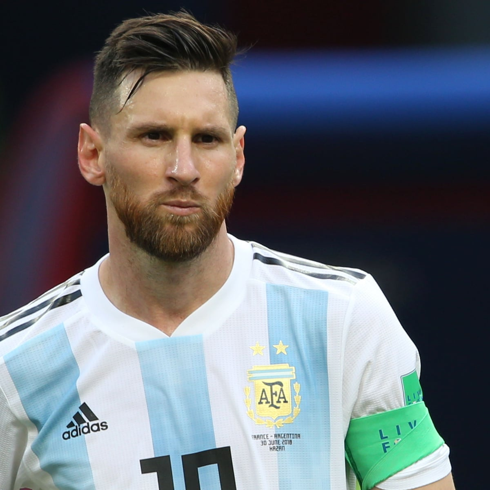

During the 2003–04 season, his fourth with Barcelona, Messi rapidly progressed through the club's ranks, debuting for a record five youth teams in a single campaign.[34] After being named player of the tournament in four international pre-season competitions with the Juveniles B, he played only one official match with the team before being promoted to the Juveniles A, where he scored 18 goals in 11 league games.[35][36] Messi was then one of several youth players called up to strengthen a depleted first team during the international break. French winger Ludovic Giuly explained how a teenage Leo caught the eye in a training session with Frank Rijkaard's first team: "He destroyed us all... They were kicking him all over the place to avoid being ridiculed by this kid, he just got up and kept on playing. He would dribble past four players and score a goal. Even the team's starting centre-backs were nervous. He was an alien." At 16 years, four months, and 23 days old, Messi made his first team debut when he came on in the 75th minute during a friendly against José Mourinho's Porto on 16 November 2003.[25][38] His performance, creating two chances and a shot on goal, impressed the technical staff, and he subsequently began training daily with the club's reserve side, Barcelona B, as well as weekly with the first team.After his first training session with the senior squad, Barça's new star player, Ronaldinho, told his teammates that he believed the 16-year-old would become an even better player than himself.[40] Ronaldinho soon befriended Messi, whom he called "little brother", which greatly eased his transition into the first team.

On 24 June 2005, his 18th birthday, Messi signed his first contract as a senior team player. It made him a Barcelona player until 2010, two years less than his previous contract, but his buyout clause increased to €150 million.[44] His breakthrough came two months later, on 24 August, during the Joan Gamper Trophy, Barcelona's pre-season competition. A starter for the first time, he gave a well-received performance against Fabio Capello's Juventus, getting an ovation from the Camp Nou.[52] While Capello requested to loan Messi, a bid to buy him came from Inter Milan, who were willing to pay his €150 million buyout clause and triple his wages.[53] According to then-president Joan Laporta, it was the only time the club faced a real risk of losing Messi, but he ultimately decided to stay.[54] On 16 September, his contract was updated for the second time in three months and extended to 2014.[44][55] Messi during a training session with Barcelona in August 2006 Due to issues regarding his legal status in the Royal Spanish Football Federation, Messi missed the start of La Liga, but on 26 September, he acquired Spanish citizenship and became eligible to play.[55][56] Wearing the number 19 shirt, he gradually established himself as the first-choice right winger, forming an attacking trio with Ronaldinho and striker Samuel Eto'o.[32][57][58] He was in the starting line-up in major matches like his first Clásico against rivals Real Madrid on 19 November, as well as Barcelona's away victory over Chelsea in the last 16 round of the Champions League.[59][57] After he had scored 8 goals in 25 games, including his first in the Champions League,[60] in a 5–0 win over Panathinaikos on 2 November 2005,[61] his season ended prematurely during the return leg against Chelsea on 7 March 2006, when he suffered a torn hamstring. Messi worked to regain fitness in time for the Champions League final, but on 17 May, the day of the final, he was eventually ruled out. He was so disappointed that he did not celebrate his team's victory over Arsenal in Paris, something he later came to regret.[51][57] While Barcelona began a gradual decline, the 19-year-old Messi established himself as one of the best players in the world during the 2006–07 campaign.[62][63] Already an idol to the culés, the club's supporters, he scored 17 goals in 36 games across all competitions.[63][64] However, he continued to be plagued by major injuries; a metatarsal fracture sustained on 12 November 2006 kept him out of action for three months.[65][66] He recovered in time for the last 16 round of the Champions League against Liverpool, but was effectively marked out of the game; Barcelona, the reigning champions, were out of the competition.[67] In the league, his goal contribution increased towards the end of the season; 11 of his 14 goals came from the last 13 games.[64] On 10 March 2007, he scored his first hat-trick in a Clásico, the first player to do so in 12 years, equalising after each goal by Real Madrid to end the match in a 3–3 draw in injury time.[68] His growing importance to the club was reflected in a new contract, signed that month, which greatly increased his wages.
In recognition of his achievements with the under-20 side, senior manager José Pékerman gave Messi his first call-up for a friendly against Hungary on 17 August 2005. Aged 18, Messi made his senior debut for Argentina in the Ferenc Puskás Stadium when he came on in the 63rd minute, only to be sent off after two minutes for a perceived foul against Vilmos Vanczák, who had grabbed his shirt; Messi had struck the defender with his arm while trying to shake him off, which the referee interpreted as an intentional elbowing, a contentious decision.[321] Messi was reportedly found weeping in the dressing room after his sending-off.[322] He returned to the team on 3 September in their World Cup qualifier defeat to Paraguay, which he had declared his "re-debut" ahead of the match.[323] Messi started his first game in the next qualifying match against Peru, in which he was able to win a crucial penalty that secured their victory. After the match, Pékerman described him as "a jewel".[324] He subsequently made regular appearances for the team ahead of Argentina's participation in the 2006 FIFA World Cup, scoring his first goal in a friendly against Croatia on 1 March 2006.[325] A hamstring injury sustained a week later jeopardised his presence in the World Cup, but he was nevertheless selected for Pékerman's squad and regained fitness in time for the start of the tournament.[326] During the World Cup in Germany, Messi witnessed their opening match victory against the Ivory Coast from the substitutes' bench. In the next match, against Serbia and Montenegro, he became the youngest player to represent Argentina at a FIFA World Cup when he came on as a substitute in the 74th minute. He assisted their fourth strike within minutes and scored the final goal in their 6–0 victory, making him the youngest scorer in the tournament and the sixth-youngest goalscorer in the history of the World Cup.[327] As their progression to the knockout phase was secured, several starters were rested during the last group match. Messi consequently started the game against the Netherlands, a 0–0 draw, as they won their group on goal differential.[328][329] In the round of 16 match against Mexico, played on his 19th birthday, Messi came on in the 84th minute, with the score tied at 1–1. He appeared to score a goal, but it was contentiously ruled offside, with the team needing a late goal in extra time to proceed.[330][331] He did not play in the quarter-final against Germany, during which Argentina were eliminated 4–2 in a penalty shootout.[332] Back home, Pékerman's decision to leave him on the bench against Germany led to widespread criticism from those who believed Messi could have changed the outcome of the match in Argentina's favour.